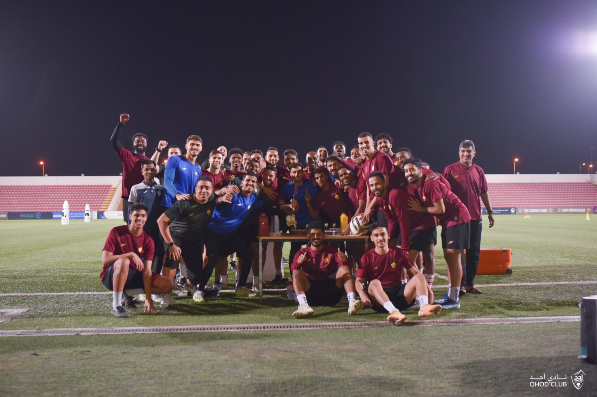

Ohod Kulübü, 1936 yılında kurulan Suudi Arabistan Profesyonel Ligi'nde yer alan bir Suudi spor kulübüdür. Tarih: Kulübün renkleri 1388 Hicri yılına kadar sarı ve siyah olarak kaldı, ancak daha sonra uzun geçmişine atıfta bulunarak sarı ve kahverengi seçildi. Kulüp, bu armayla ilk resmi maçını 1389 Hicri yılında Mekke'deki El Vahde'ye karşı oynadı. Ohod Kulübü, 8 kez Süper Lig'e yükseldi ve her seferinde hemen düşüş yaşadı. Son yükselişi 2003-2004 sezonunda Birinci Lig şampiyonluğunu kazandığı 2004-2005 sezonuydu. Kulübün Başarıları: 1- Birinci Lig şampiyonluğu 3 kez. 2- 1995 yılında El Tayi'ye karşı Prens Faysal Bin Fahd Kupası şampiyonluğu. 3- Yerel ve uluslararası basketbol şampiyonluklarından 42 tane. 4- 1973 yılında Batı Bölgesi Şampiyonası'nda ikinci. 5- 1980 yılında Kral Kupası yarı finaline çıkma başarısı. 6- Karate Krallık Şampiyonası'nda iki kez birinci. 7- Kulüp tarihinde ilk kez 2015 yılında Olimpik futbol takımının Süper Lig'e yükselmesi. 8- Kulüp tarihinde ilk kez 2016 yılında Gençler futbol takımının Süper Lig'e yükselmesi.